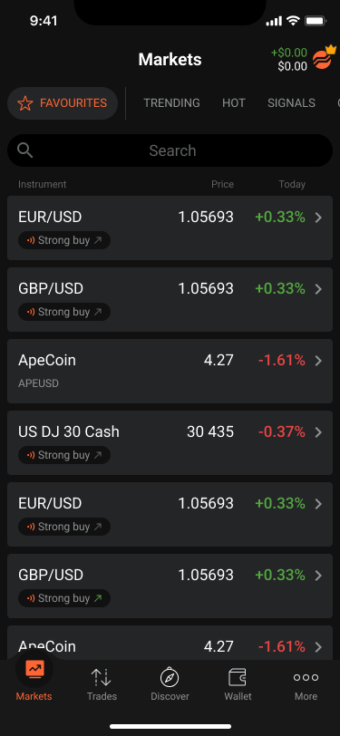
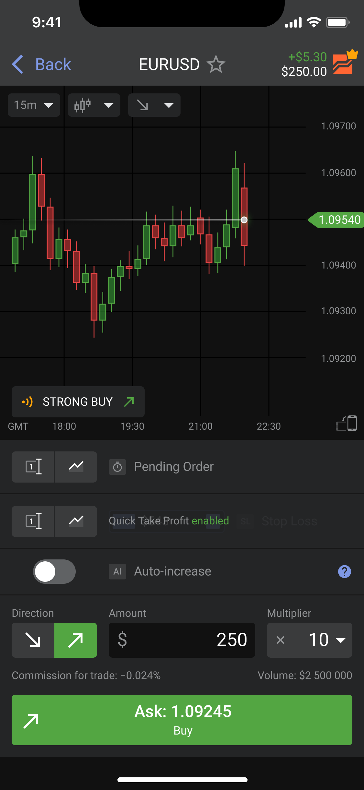
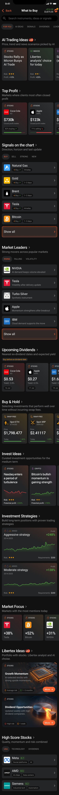
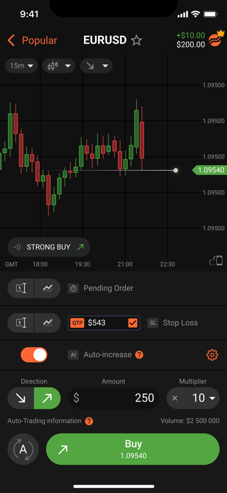
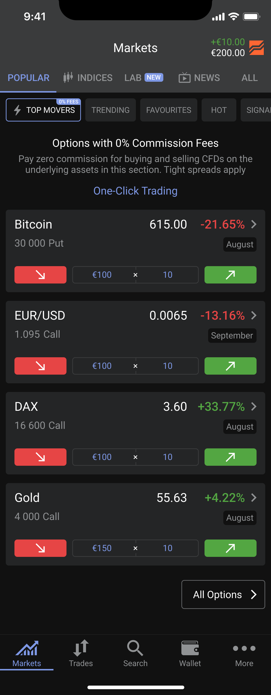

Libertex
I lead the design direction of the flagship trading terminal, working across onboarding, trading, options, copy trading and investment experiences. I work hands-on with product and engineering and mentor a junior designer. Designs are assessed with research, analytics and experiments run with the product team.





Selected results: +22% first-deposit conversion · +33.9% options trades · 0.21% → 1.91% registration-to-strategies clicks.
See the Libertex work ↗